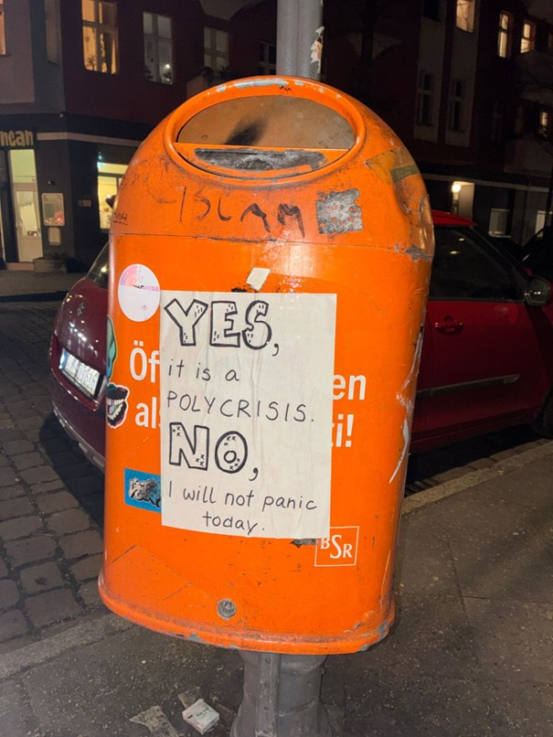

Lass uns den Weg zur Transformation öffnen!
Krise belastet. Hier findest du Projekte und Initiativen, die emotionale Unterstützung dabei bieten, Schmerz zuzulassen und zu verarbeiten
Initiativen in ganz Berlin
Kompetenznetz Einsamkeit
Psychologists for future e.V. - Über Klima-Angst gemeinsam sprechen
ÜBERSICHT Stadtteilzentren in deinem Kiez
ÜBERSICHT Projekte des Landesprogramms „Demokratie. Vielfalt. Respekt. Gegen Rechtsextremismus, Rassismus und Antisemitismus"
ÜBERSICHT socialmap.berlin
Berliner Initiative gegen Gewalt an Frauen
Entschwört (Beratung zu Verschwörungsmythen im persönlichen Umfeld)
 Kompetenznetz Einsamkeit
Kompetenznetz Einsamkeit Psychologists for future e.V. - Über Klima-Angst gemeinsam sprechen
Psychologists for future e.V. - Über Klima-Angst gemeinsam sprechen ÜBERSICHT Stadtteilzentren in deinem Kiez
ÜBERSICHT Stadtteilzentren in deinem Kiez ÜBERSICHT Projekte des Landesprogramms „Demokratie. Vielfalt. Respekt. Gegen Rechtsextremismus, Rassismus und Antisemitismus"
ÜBERSICHT Projekte des Landesprogramms „Demokratie. Vielfalt. Respekt. Gegen Rechtsextremismus, Rassismus und Antisemitismus" ÜBERSICHT socialmap.berlin
ÜBERSICHT socialmap.berlin Berliner Initiative gegen Gewalt an Frauen
Berliner Initiative gegen Gewalt an Frauen Entschwört (Beratung zu Verschwörungsmythen im persönlichen Umfeld)
Entschwört (Beratung zu Verschwörungsmythen im persönlichen Umfeld) Nachbarschaftsladen
Nachbarschaftsladen Stadtschloss Moabit
Stadtschloss Moabit Familienzentrum Nauener Platz
Familienzentrum Nauener Platz Nogat Singers
Nogat Singers Trial & Error (Tauschladen, Foodsharing, SoLaWi)
Trial & Error (Tauschladen, Foodsharing, SoLaWi) Fincan Kulturcafé
Fincan Kulturcafé InMotion e.V. - cause: emotions are energy in motion
InMotion e.V. - cause: emotions are energy in motion Silent Rixdorf – Verein zur Förderung von Kunst, Kultur und Toleranz
Silent Rixdorf – Verein zur Förderung von Kunst, Kultur und Toleranz Mittelhof e. V.
Mittelhof e. V. Berliner Krisendienst – Region Süd-West
Berliner Krisendienst – Region Süd-West Psychosoziales Kommunikationszentrum Friedenau
Psychosoziales Kommunikationszentrum Friedenau Nachbarschaftshaus Friedenau
Nachbarschaftshaus Friedenau Initiative Blühender Campus
Initiative Blühender Campus Unigardening Netzwerk
Unigardening Netzwerk Campusmagazin FURIOS
Campusmagazin FURIOS